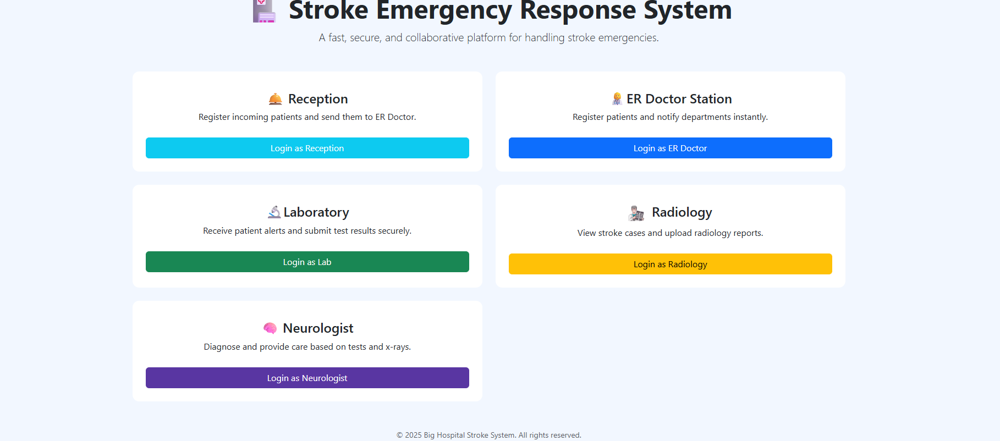

Web Interface
A browser-based application interface developed with web technologies.
Healthcare · Web Application · Hardware
A healthcare-oriented application project combining web development, database management and Arduino-based hardware integration.

MedConnect — Main application interface
01 — Highlights
A browser-based application interface developed with web technologies.
Python and Flask used for application-side backend development.
MySQL used for structured data management.
Arduino included as part of the project's hardware component.
02 — Links
03 — The Problem
Healthcare-related applications can involve several types of information and technologies. Bringing an application interface, a backend and hardware components together requires a clear structure and communication between the different parts.
MedConnect explores this combination through a web application supported by a database and Arduino-related hardware.
04 — Technical Requirements
05 — My Role
My work on MedConnect involved developing the application components using Python, Flask, MySQL and web technologies, alongside the Arduino-related part of the project.
The focus was on bringing the different technologies into a coherent application structure.
06 — Technical Challenges
07 — Architecture & Choices
Web Interface
HTML / CSS / JavaScript
|
v
Python / Flask
|
v
MySQL
Arduino Hardware Component
08 — Implementation Approach
09 — Results
MedConnect resulted in a project implementation combining a web application, a Python backend, MySQL and an Arduino component. A live demonstration and source repository are available through the project links.
10 — Lessons Learned
11 — Interface